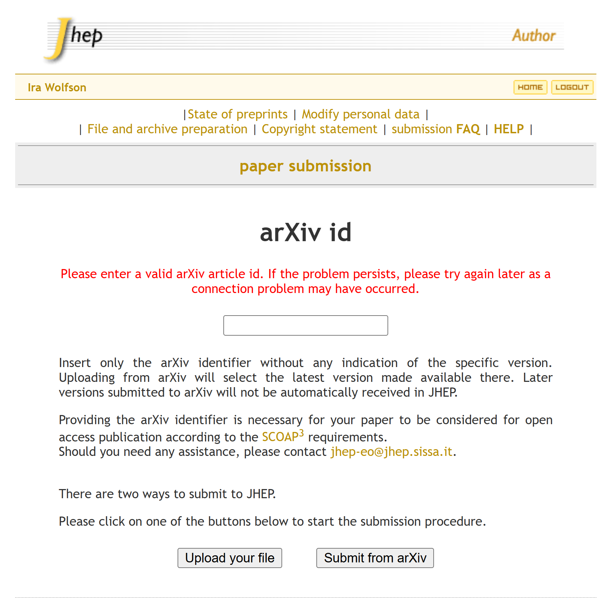
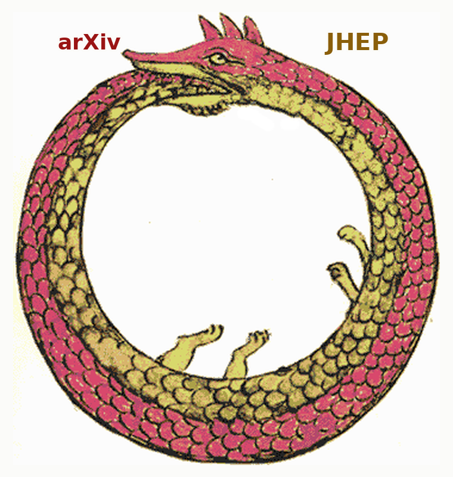

The Paper That Cannot Be Submitted
Here is a sentence I did not expect to write with a straight face: there is a paper of mine that cannot be submitted to the Journal of High Energy Physics. Not rejected. Not desk-rejected. Not read by an editor and found wanting. Submitted — the verb, the act, the clicking of a button. It cannot be done, by me or by anyone, and the reason has nothing to do with the physics.
The mechanism takes three sentences, all documented.
arXiv declined the paper and advised me to obtain peer review elsewhere. JHEP’s submission portal will not accept a manuscript without an arXiv identifier. There are two submission routes on that page, and both stop at the same field.
That’s the whole thing. Everything below is detail.
The letter
arXiv’s moderators sent this. I’m quoting it in full, because paraphrase invites the reasonable objection that surely they didn’t put it quite like that.
Thank you for submitting your work to arXiv. We regret to inform you that arXiv’s moderators have determined that your submission will not be accepted at this time and made public on arXiv.org.
In this case, our moderators have determined that your submission would benefit from additional review and revision that is outside of the services we provide.
Our moderators will reconsider this material via appeal if it is published in a conventional journal and you can provide a resolving DOI to the published version of the work or link to the journal’s website showing the status of the work.
Note that publication in a conventional journal does not guarantee that arXiv will accept this work.
[…] Some authors have found that asking their personal network of colleagues or submitting to a conventional journal for peer review are alternative avenues to obtain feedback.
Four clauses are doing work, and I want to be precise about which.
The first is a judgment about scientific merit — the work needs more review — immediately followed by a disclaimer of competence to make it. It is outside the services we provide. Someone assessed the physics, in a sentence, and the same sentence says they don’t do that. Hold onto this one; it gets worse.
The second names a remedy: publish in a conventional journal.
The third withdraws it. Publication does not guarantee acceptance. A gate whose stated exit condition explicitly does not open it is not a gate. It’s discretion with a procedure painted on the front.
The fourth is my favourite, and it is official advice: ask your personal network of colleagues. Social capital, in writing, as policy.
Then there’s the envelope, which I overlooked for an embarrassingly long time. The letter is signed arXiv Support. It arrives as a ticket, with a link to view the request and a toggle to turn off notifications. The appeals portal is an Atlassian service desk — the same product a mid-sized company uses to route broken laptops — and the human who eventually replied signs as Support 3. The genre is unambiguous: this is not editorial correspondence, it is customer service. Somewhere upstream a decision was taken about whether a piece of physics enters the literature, and it reached me through the same channel as a password reset.
The form
So I took the advice. Conventional journal, peer review, exactly as instructed.
JHEP’s author guidelines say it plainly: you will need to provide an arXiv article id, because JHEP articles are funded by the SCOAP3 consortium and must be categorised and published accordingly. The submission page repeats it. Enter an arXiv identifier. No identifier, no submission — and if you’re wondering about the second button, the one marked Upload your file, I checked. Same wall. Same red text.
Please enter a valid arXiv article id.
I do not have one. That is the entire reason I am on this page.

Nobody built this
The temptation is to call this a racket, and I want to resist it, because it isn’t one and because the truth is more interesting.
Hanlon’s razor: never attribute to malice what is adequately explained by stupidity. Right instinct, wrong word. Nobody here is stupid. SCOAP3’s categorisation requirement is sensible. arXiv’s moderation load is real and the volume is crushing. JHEP’s form does exactly what it was built to do. Every individual in this chain is competent, and I choose to believe they are acting in good faith.
So let me propose the duller blade, which I think is the accurate one: never attribute to malice what is adequately explained by reckless oversight. Not stupidity. Not indifference either — reckless in the legal sense, where you are answerable for the foreseeable consequences of the thing you didn’t bother to look at.
Because nobody at JHEP decided arXiv should screen their submissions. What happened is that SCOAP3 funds the open-access publication, SCOAP3 requires categorisation, categorisation runs on arXiv identifiers, and so an identifier became a precondition for the submit button. Each step is defensible. Each was taken by someone solving a real problem in front of them.
The composition is what nobody audited. Chain the four together and arXiv moderation becomes JHEP’s first-pass filter — unnamed, uncontracted, and as far as I can tell never agreed to by either party. Call it the categorisation ouroboros: an administrative requirement about metadata that quietly acquired the power to decide what gets read.

This is where the duller blade cuts. A defensible step, times four, is not automatically a defensible system, and somebody ought to be checking. That nobody is checking isn’t stupidity. It’s the specific failure of assuming that because each component behaves, the assembly does — which in any other engineering context we’d call negligent, and which in this one we call how things ended up.
And here’s what makes it different in kind from a rejection. A journal that rejects you has an editor, and the editor has a name, an institution, and a board that can be written to. arXiv’s moderators are anonymous by design and the criteria are unpublished. My appeal against the original rejection was never acknowledged at all — not denied, not queued, not answered. A later request did produce a reply, and I was briefly encouraged until I looked at the timestamps: the message and two automatic status changes all landed in the same minute. A trigger firing on ticket creation, signed with a support agent’s name.
Which brings me to the part I find genuinely hard to get past. Across two rejections and two appeals, I have not received one sentence written by a human being about the contents of my papers. Not a line. Everything I hold is template.
I’m not alleging bad faith — I have no way to allege anything about people I cannot identify. That’s rather the point. The accountability machinery we spent a century building around peer review does not exist here, and we have made passing through here compulsory.
What happened to the other one
At this stage a reader is entitled to a suspicion: that the physics was bad, arXiv sniffed it out correctly, and this whole post is an elaborate way of not saying so.
Fair. So here’s the control.
A different paper of mine, on the geometric origin of the factor of 1/4 in the Bekenstein–Hawking entropy, was rejected by arXiv. Not a similar letter — I have both in front of me and they’re identical, same clauses, same order, same apology for the high volume of submissions, same closing good wishes.
Which is worth pausing on, because it changes what that first clause means. Neither letter names the paper it rejects. No title, no abstract line, nothing identifying the object of judgment except a submission number. So your submission would benefit from additional review and revision is not an assessment of my work. It’s a template. The sentence reading as a considered scientific verdict is boilerplate wearing a verdict’s clothes.
I’ll concede immediately that a queue at arXiv’s volume can’t write bespoke letters. Of course it can’t. But then don’t put a merit claim in the template. This submission has not been accepted; we do not provide reasons would be honest, unhelpful, and considerably more defensible than a form letter that appears to tell several thousand people a year something specific about their physics.
At any rate, I did what the letter said. I sent it to Classical and Quantum Gravity. It was refereed by people who read it. It was accepted, published, and has a DOI that resolves. It was picked up by the national press, which is a peculiar fate for a factor of 1/4.
Then I went back to arXiv with the DOI in hand — clause two satisfied in full. Not through the appeal channel, which by then had swallowed one attempt without acknowledgement. As a new submission.
They accepted it. Into physics.gen-ph.
Gen-ph is the category that functions as a polite oubliette. Nobody’s alerts watch it. Nobody’s search habits go there. It’s technically not a rejection, which is exactly what makes it work. The paper is public, it has an identifier, every box is ticked, and the effective readership is upper-bound by one.
Sit with the shape of that. The full remedy arXiv itself specified — peer review, publication, a resolving DOI — was performed, and what it purchased was admission to the archive’s basement. Their letter warned that publication does not guarantee acceptance. It turns out to be worse than that, and more elegant: publication guarantees a kind of acceptance that costs them nothing to grant and does me very little good.
Meanwhile the actual epistemic verdict is on the record. CQG’s referees read the physics and said yes. arXiv’s moderators, holding that same published paper, said gen-ph. Those two assessments disagree, in public, with timestamps. At least one is wrong, and only one was made by someone who read it.
What’s actually in gen-ph
One data point isn’t a result. It’s an anecdote with a DOI attached, so I went and measured the category properly — the full 2020–2022 census, both categories, written up separately here, with the scripts and raw data published alongside.
The short version, and it doesn’t flatter me evenly. gen-ph papers get published at nearly the rate gr-qc papers do — 44.6% against 51.8% — so whatever the routing detects, it isn’t unpublishability. But they publish in flagship venues at 4.9% against gr-qc’s 56.2%, and a defender of the moderation system can point at that and claim vindication.
The number that matters here is the third one. Of published gen-ph papers, 10.1% were deposited on arXiv one to three years after their journal publication. In gr-qc it’s 1.9%. Five-fold. That’s the fingerprint of exactly this pipeline: rejected, published elsewhere, readmitted holding a receipt. Which means the route I took isn’t an anomaly. It’s a documented pattern, and arXiv’s own form letter is the document that prescribes it.
And one figure I include because leaving it out would be dishonest. Of those 39 readmitted papers, the number reaching a flagship journal is zero. Mine went to CQG. So on three years of evidence I’m a class of one, which is the strongest thing I can say about my own case and the weakest possible basis for generalising from it. If you want to read this whole post as one man’s statistical anomaly complaining about the mean, I can’t stop you, and the data is right there to do it with.
What I am not claiming
Not that arXiv should publish everything. A moderation layer is necessary, the volume is brutal, and I don’t envy them.
Not that this is all of physics. I tested one journal. Boltzmann Brain-Death currently sits at Foundations of Physics, which took it without an arXiv identifier and without drama — so the loop is not universal. It’s a SCOAP3-adjacent phenomenon, and how far it extends is a question I can’t answer from one submission portal and one afternoon.
What I’m claiming is narrow and, I think, hard to argue with: for at least one Q1 journal in high energy physics, the decision about whether your manuscript ever reaches an editor has been handed to an anonymous body that publishes no criteria, gives no reasons, signs its decisions Support, and explicitly disclaims the ability to evaluate research.
There is nominally an appeals process. The letter points at it. I filed one and never heard back — to this day I don’t know whether it was denied on the merits or never read, and there is no state I can query to find out. Nothing eventually got that paper onto arXiv except starting over: a fresh submission, months later, with a journal’s imprimatur attached. The remedy the letter advertises is not the thing that worked. I went around it.
Not by conspiracy. By plumbing.
So what now
This has run considerably longer than I meant it to, which my wife — who has heard the whole thing at greater length still, and who noted that I’d been saying “and another thing” for about forty minutes — will tell you is the least surprising sentence here. She asked the only question that matters: so what do you do now?
When I started drafting this post, the honest answer was I wait. There was a second appeal in flight — not to be let in, since I’m in, but to be moved from gen-ph to gr-qc where the paper’s readers actually are. A published, refereed, DOI-bearing paper asking to be filed under its own subject. I’d have called that a formality a year ago.
Before I finished, the answer arrived. I’ll quote it in full, because it is short enough to.
After careful consideration, our moderators have denied your appeal. We understand this is a disappointing result, but please note this is the final decision and no further consideration will be given.
That’s the reply. Every condition in the original letter met — published, refereed, DOI resolving — and the request was not even for admission but for the correct shelf. Denied, no reason, final.
One detail, for the record. The automated acknowledgement of this appeal arrived in the same minute I filed it. This denial did not — it came days later, on its own schedule, which means a person was involved in closing it. So somebody did, at last, make a human decision about my paper. They just declined to say a single word about its contents while doing so. After two rejections and two appeals, that remains the count: not one sentence, from any human being, about the physics.
So what do I do now? Nothing, as regards arXiv; there is nowhere left to do it. The paper is published, it is read by the people who cite it, and it sits in gen-ph, and both of those things are now permanent. I’m writing this instead. Draw your own conclusions from the fact that the only remaining venue for the appeal was a blog.
Dr. Ira Wolfson is a physicist and Senior Lecturer at Braude College of Engineering, Israel. The 1/4 paper is arXiv:2607.09699, published in Classical and Quantum Gravity, DOI 10.1088/1361-6382/ae7fe8.